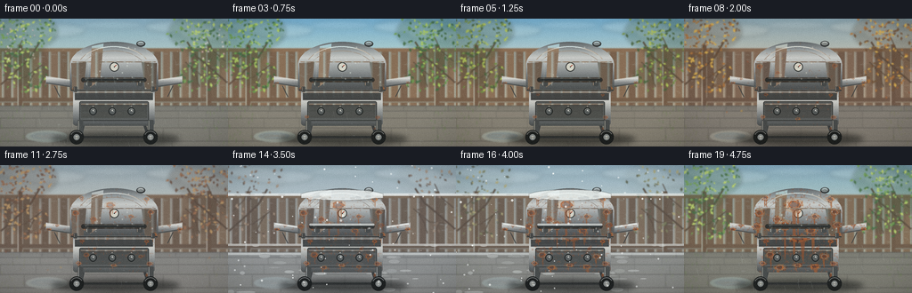
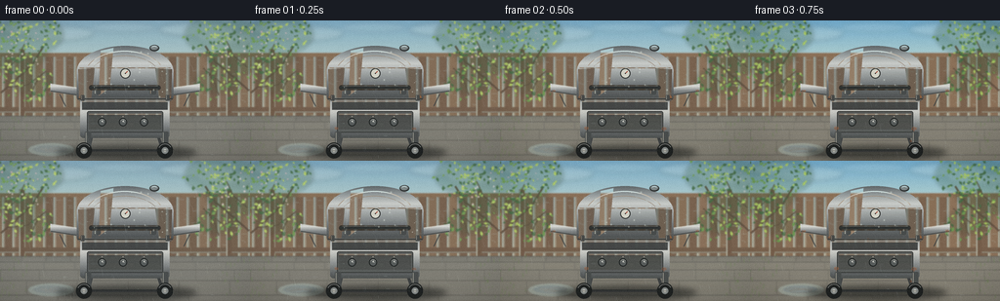
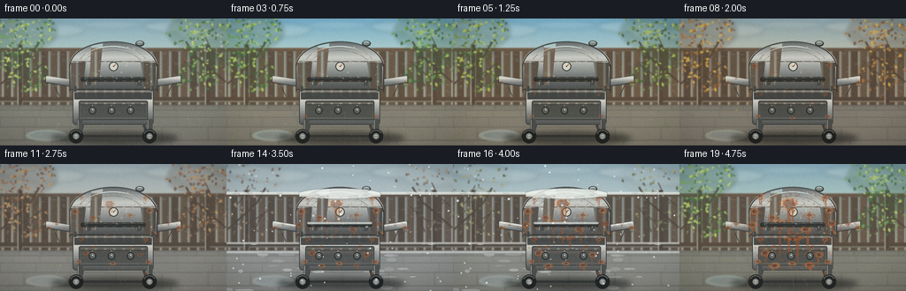
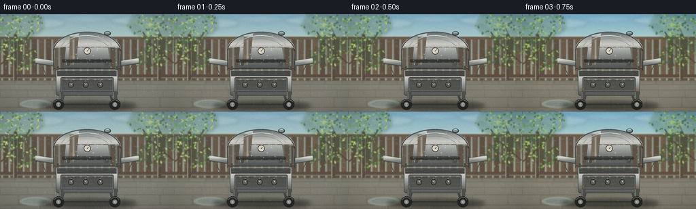

CODING AGENTS AS PIXEL WORLD MODELS
traex/DeepSeek-V4.1-Flash · material_0047
点击播放 · 原生 RGB 像素
逐轮保存的候选
回放视频、检查图与代码变化。
每份候选均可单独播放。实际图片检查记录在下方工具轨迹中。
候选 01播放与检查图
点击播放 · 原生 RGB 像素


展开代码变化
--- 上一保存版本
+++ 本次保存版本
@@ -0,0 +1,946 @@
+"""Procedural timelapse of a metal barbecue grill weathering outdoors."""
+
+from __future__ import annotations
+
+import json
+import math
+from pathlib import Path
+
+import numpy as np
+from PIL import Image, ImageChops, ImageDraw, ImageFilter
+from scipy.ndimage import gaussian_filter
+
+import artifact_io
+
+
+ROOT = Path(__file__).resolve().parent
+SPEC = json.loads((ROOT / "task_spec.json").read_text())
+W = int(SPEC["width"])
+H = int(SPEC["height"])
+N = int(SPEC["frames"])
+FPS = float(SPEC["fps"])
+S = 4
+IW, IH = W * S, H * S
+
+
+def rgb(value: str) -> tuple[int, int, int]:
+ value = value.lstrip("#")
+ return tuple(int(value[i : i + 2], 16) for i in (0, 2, 4))
+
+
+def mix(a, b, t):
+ t = max(0.0, min(1.0, float(t)))
+ return tuple(int(round(a[i] * (1.0 - t) + b[i] * t)) for i in range(3))
+
+
+def sample_stops(stops, t):
+ t = max(0.0, min(1.0, float(t)))
+ def as_value(value):
+ return rgb(value) if isinstance(value, str) else value
+
+ for (p0, v0), (p1, v1) in zip(stops[:-1], stops[1:]):
+ if t <= p1:
+ local = 0.0 if p1 == p0 else (t - p0) / (p1 - p0)
+ v0 = as_value(v0)
+ v1 = as_value(v1)
+ if isinstance(v0, tuple):
+ return mix(v0, v1, local)
+ return v0 * (1.0 - local) + v1 * local
+ return as_value(stops[-1][1])
+
+
+def smoothstep(a, b, x):
+ if a == b:
+ return float(x >= b)
+ x = max(0.0, min(1.0, (x - a) / (b - a)))
+ return x * x * (3.0 - 2.0 * x)
+
+
+def P(x, y):
+ return (float(x) * S, float(y) * S)
+
+
+def box(x0, y0, x1, y1):
+ return [x0 * S, y0 * S, x1 * S, y1 * S]
+
+
+def rgba(color, alpha=255):
+ if len(color) == 4:
+ return color
+ return (int(color[0]), int(color[1]), int(color[2]), int(alpha))
+
+
+PALETTE = [
+ (
+ 0.00,
+ {
+ "sky_top": "#789fb5",
+ "sky_low": "#c5d6c8",
+ "cloud": "#dce4dc",
+ "leaf_dark": "#315b35",
+ "leaf_mid": "#609145",
+ "leaf_light": "#a8c35b",
+ "grass": "#668744",
+ "stone": "#77766f",
+ "wood": "#705b49",
+ "fog": "#c8d8d5",
+ "ambient": "#fff3d2",
+ },
+ ),
+ (
+ 0.22,
+ {
+ "sky_top": "#61a3cc",
+ "sky_low": "#d6e2d0",
+ "cloud": "#f0eee1",
+ "leaf_dark": "#25522c",
+ "leaf_mid": "#4e863a",
+ "leaf_light": "#91b949",
+ "grass": "#557c34",
+ "stone": "#817c70",
+ "wood": "#7c614b",
+ "fog": "#d3ded2",
+ "ambient": "#fff1b9",
+ },
+ ),
+ (
+ 0.46,
+ {
+ "sky_top": "#8498a1",
+ "sky_low": "#d1c2aa",
+ "cloud": "#d9d1c2",
+ "leaf_dark": "#673b2a",
+ "leaf_mid": "#a9592c",
+ "leaf_light": "#d19740",
+ "grass": "#7a7245",
+ "stone": "#77736d",
+ "wood": "#6b5547",
+ "fog": "#cbc4b8",
+ "ambient": "#f1d49a",
+ },
+ ),
+ (
+ 0.66,
+ {
+ "sky_top": "#899ca7",
+ "sky_low": "#bec8c8",
+ "cloud": "#cbd3d4",
+ "leaf_dark": "#4c4039",
+ "leaf_mid": "#6a584c",
+ "leaf_light": "#897260",
+ "grass": "#858575",
+ "stone": "#838687",
+ "wood": "#665a51",
+ "fog": "#d2dce0",
+ "ambient": "#e4e9e8",
+ },
+ ),
+ (
+ 0.80,
+ {
+ "sky_top": "#8ca5b2",
+ "sky_low": "#c8d2d3",
+ "cloud": "#e3e9e8",
+ "leaf_dark": "#4f433d",
+ "leaf_mid": "#6f5e53",
+ "leaf_light": "#927f6c",
+ "grass": "#929181",
+ "stone": "#898c8d",
+ "wood": "#685c53",
+ "fog": "#d8e2e5",
+ "ambient": "#eef1ef",
+ },
+ ),
+ (
+ 0.94,
+ {
+ "sky_top": "#789fb4",
+ "sky_low": "#bfd0c2",
+ "cloud": "#dce5dd",
+ "leaf_dark": "#315c35",
+ "leaf_mid": "#5f9244",
+ "leaf_light": "#a8c45b",
+ "grass": "#668844",
+ "stone": "#787870",
+ "wood": "#705c4a",
+ "fog": "#c8d9d5",
+ "ambient": "#fff1cf",
+ },
+ ),
+ (
+ 1.00,
+ {
+ "sky_top": "#769db3",
+ "sky_low": "#bfd1c4",
+ "cloud": "#dce6df",
+ "leaf_dark": "#305c34",
+ "leaf_mid": "#5d9043",
+ "leaf_light": "#a7c35a",
+ "grass": "#658742",
+ "stone": "#77776f",
+ "wood": "#705c49",
+ "fog": "#c7d8d4",
+ "ambient": "#fff0cc",
+ },
+ ),
+]
+
+
+def season_palette(t):
+ result = {}
+ for key in PALETTE[0][1]:
+ result[key] = sample_stops([(p, colors[key]) for p, colors in PALETTE], t)
+ return result
+
+
+def weather_values(t):
+ rain = sample_stops(
+ [
+ (0.00, 0.78),
+ (0.16, 0.58),
+ (0.23, 0.08),
+ (0.40, 0.05),
+ (0.48, 0.44),
+ (0.63, 0.78),
+ (0.70, 0.35),
+ (0.78, 0.10),
+ (0.86, 0.24),
+ (0.94, 0.68),
+ (1.00, 0.82),
+ ],
+ t,
+ )
+ snow = smoothstep(0.665, 0.735, t) * (1.0 - smoothstep(0.835, 0.915, t))
+ humidity = max(rain * 0.90, snow * 0.55, 0.22 + 0.16 * math.sin(t * math.pi))
+ falling = max(0.0, 1.0 - abs(t - 0.47) / 0.19)
+ blossom = max(0.0, 1.0 - abs(t - 0.025) / 0.15)
+ leaf_cover = 1.0 - 0.80 * smoothstep(0.64, 0.73, t) * (1.0 - smoothstep(0.83, 0.94, t))
+ return rain, snow, humidity, falling, blossom, leaf_cover
+
+
+def vertical_gradient(size, y0, y1, stops):
+ arr = np.zeros((size[1], size[0], 4), dtype=np.uint8)
+ y0i = int(max(0, min(size[1], round(y0))))
+ y1i = int(max(y0i + 1, min(size[1], round(y1))))
+ for y in range(y0i, y1i):
+ t = (y - y0) / max(1, y1 - y0)
+ color = sample_stops(stops, t)
+ arr[y, :, :3] = color
+ arr[y, :, 3] = 255
+ return Image.fromarray(arr, "RGBA")
+
+
+def paste_gradient(base, mask, bounds, stops, offset=(0, 0)):
+ x0, y0, x1, y1 = [int(round(v)) for v in bounds]
+ x0 = max(0, x0)
+ y0 = max(0, y0)
+ x1 = min(IW, x1)
+ y1 = min(IH, y1)
+ if x1 <= x0 or y1 <= y0:
+ return
+ grad = vertical_gradient((x1 - x0, y1 - y0), 0, y1 - y0, stops)
+ local_mask = mask.crop((x0, y0, x1, y1))
+ base.paste(grad, (x0 + offset[0], y0 + offset[1]), local_mask)
+
+
+def irregular_polygon(draw, cx, cy, radius, seed, fill, squash=1.0, lobes=10, alpha=255):
+ rng = np.random.default_rng(seed)
+ phases = rng.uniform(0.0, math.tau, lobes)
+ points = []
+ for i in range(lobes):
+ angle = math.tau * i / lobes
+ ripple = 0.12 * math.sin(angle * 3.0 + phases[i % 3])
+ rr = radius * (0.84 + ripple + rng.uniform(-0.08, 0.08))
+ points.append(P(cx + math.cos(angle) * rr, cy + math.sin(angle) * rr * squash))
+ draw.polygon(points, fill=rgba(fill, alpha))
+
+
+def build_leaves():
+ rng = np.random.default_rng(1812)
+ clusters = [
+ (9, 28, 34, 30, 110),
+ (36, 14, 27, 22, 65),
+ (246, 30, 34, 30, 105),
+ (216, 15, 28, 23, 70),
+ (29, 65, 28, 18, 55),
+ (225, 66, 28, 18, 55),
+ ]
+ leaves = []
+ for cx, cy, rx, ry, count in clusters:
+ for _ in range(count):
+ ang = rng.uniform(0, math.tau)
+ radial = math.sqrt(rng.uniform(0.0, 1.0))
+ x = cx + math.cos(ang) * rx * radial
+ y = cy + math.sin(ang) * ry * radial
+ size = rng.uniform(1.25, 2.65)
+ shade = rng.uniform(0.0, 1.0)
+ rotation = rng.uniform(0, math.pi)
+ leaves.append((x, y, size, shade, rotation))
+ return leaves
+
+
+LEAVES = build_leaves()
+
+
+def draw_leaf(draw, x, y, size, rotation, color, alpha=235):
+ ca, sa = math.cos(rotation), math.sin(rotation)
+ pts = []
+ for px, py in [(-1.0, 0.0), (0.0, -0.58), (1.0, 0.0), (0.0, 0.58)]:
+ pts.append(P(x + (px * ca - py * sa) * size, y + (px * sa + py * ca) * size))
+ draw.polygon(pts, fill=rgba(color, alpha))
+
+
+def draw_background(frame, t, pal, weather):
+ rain, snow, humidity, falling, blossom, leaf_cover = weather
+ bg = Image.new("RGBA", (IW, IH), (0, 0, 0, 255))
+
+ sky = vertical_gradient(
+ (IW, IH),
+ 0,
+ IH,
+ [
+ (0.00, pal["sky_top"]),
+ (0.24, mix(pal["sky_top"], pal["sky_low"], 0.55)),
+ (0.70, pal["sky_low"]),
+ (1.00, mix(pal["sky_low"], pal["stone"], 0.30)),
+ ],
+ )
+ bg.alpha_composite(sky)
+
+ cloud_layer = Image.new("RGBA", (IW, IH), (0, 0, 0, 0))
+ cd = ImageDraw.Draw(cloud_layer)
+ cloud_color = pal["cloud"]
+ for x, y, rx, ry, a in [
+ (26, 8, 30, 7, 52),
+ (58, 13, 38, 8, 42),
+ (201, 9, 39, 7, 46),
+ (236, 18, 34, 7, 38),
+ (126, 7, 34, 5, 28),
+ ]:
+ cd.ellipse(box(x - rx, y - ry, x + rx, y + ry), fill=rgba(cloud_color, a))
+ cloud_layer = cloud_layer.filter(ImageFilter.GaussianBlur(2.3 * S))
+ bg.alpha_composite(cloud_layer)
+
+ wood = pal["wood"]
+ board_colors = [
+ mix(wood, rgb("#c5a77e"), 0.13),
+ mix(wood, rgb("#3b2c25"), 0.14),
+ mix(wood, rgb("#d0b68e"), 0.08),
+ mix(wood, rgb("#2d2420"), 0.10),
+ ]
+ fence = Image.new("RGBA", (IW, IH), (0, 0, 0, 0))
+ fd = ImageDraw.Draw(fence)
+ for i, x in enumerate(np.arange(-7, 262, 10.5)):
+ top = 34 + (i % 3) * 0.35
+ color = board_colors[i % len(board_colors)]
+ fd.rectangle(box(x, top, x + 9.6, 100), fill=rgba(color, 255))
+ fd.line([P(x + 0.8, top + 1), P(x + 0.8, 99)], fill=rgba(mix(color, rgb("#ffffff"), 0.16), 75), width=max(1, S // 2))
+ fd.line([P(x + 9.0, top + 1), P(x + 9.0, 99)], fill=rgba(mix(color, rgb("#111111"), 0.35), 100), width=max(1, S // 2))
+ grain = np.random.default_rng(400 + i)
+ for _ in range(4):
+ gy = grain.uniform(top + 2, 98)
+ gx = grain.uniform(x + 1, x + 8)
+ length = grain.uniform(1.5, 5.0)
+ fd.line(
+ [P(gx, gy), P(gx + length, gy + grain.uniform(-0.5, 0.5))],
+ fill=rgba(mix(color, rgb("#1f1712"), 0.28), 60),
+ width=1,
+ )
+ fd.rectangle(box(0, 32.5, 256, 37), fill=rgba(mix(wood, rgb("#a4825d"), 0.20), 255))
+ fd.rectangle(box(0, 89, 256, 94.5), fill=rgba(mix(wood, rgb("#3a2c25"), 0.18), 255))
+ fd.line([P(0, 32.8), P(256, 32.8)], fill=rgba(mix(wood, rgb("#ffffff"), 0.25), 80), width=S)
+ fd.line([P(0, 93.9), P(256, 93.9)], fill=rgba(mix(wood, rgb("#17100d"), 0.45), 130), width=S)
+ for x in (19.5, 231.5):
+ fd.rectangle(box(x, 29.5, x + 5.5, 103), fill=rgba(mix(wood, rgb("#49372c"), 0.30), 255))
+ fd.line([P(x + 0.7, 30), P(x + 0.7, 102)], fill=rgba(mix(wood, rgb("#ffffff"), 0.20), 70), width=S)
+ bg.alpha_composite(fence)
+
+ ground = vertical_gradient(
+ (IW, IH),
+ 98 * S,
+ IH,
+ [
+ (0.00, mix(pal["stone"], rgb("#35383a"), 0.28)),
+ (0.16, pal["stone"]),
+ (1.00, mix(pal["stone"], rgb("#4f4a42"), 0.32)),
+ ],
+ )
+ ground_mask = Image.new("L", (IW, IH), 0)
+ ImageDraw.Draw(ground_mask).rectangle(box(0, 98, 256, 144), fill=255)
+ bg.paste(ground, (0, 0), ground_mask)
+
+ patio = Image.new("RGBA", (IW, IH), (0, 0, 0, 0))
+ pd = ImageDraw.Draw(patio)
+ row_edges = [98.0, 104.0, 112.0, 123.0, 138.0, 144.0]
+ spacing = [25.0, 31.0, 40.0, 52.0, 67.0]
+ offsets = [3.0, 17.0, 0.0, 25.0, 8.0]
+ for r, (y0, y1) in enumerate(zip(row_edges[:-1], row_edges[1:])):
+ step = spacing[r]
+ off = offsets[r]
+ x = -off
+ j = 0
+ while x < 260:
+ rng = np.random.default_rng(700 + r * 37 + j)
+ tint = rng.uniform(-0.05, 0.06)
+ color = mix(pal["stone"], rgb("#d0c5b2") if tint > 0 else rgb("#2f3030"), abs(tint))
+ pd.polygon(
+ [P(x + 0.8, y0 + 0.8), P(x + step - 0.8, y0 + 0.8), P(x + step - 0.8, y1 - 0.8), P(x + 0.8, y1 - 0.8)],
+ fill=rgba(color, 125),
+ )
+ j += 1
+ x += step
+ pd.line([P(0, y0), P(256, y0)], fill=rgba(mix(pal["stone"], rgb("#252729"), 0.55), 170), width=S)
+ pd.line([P(0, y0 + 0.55), P(256, y0 + 0.55)], fill=rgba(mix(pal["stone"], rgb("#e0d9c8"), 0.30), 45), width=max(1, S // 2))
+ x = -off
+ j = 0
+ while x < 260:
+ pd.line([P(x, y0 + 0.7), P(x + (j % 2) * 0.7, y1 - 0.7)], fill=rgba(mix(pal["stone"], rgb("#2b2d2e"), 0.54), 125), width=max(1, S // 2))
+ j += 1
+ x += step
+ bg.alpha_composite(patio)
+
+ # A shallow puddle catches the cool sky and small rain rings.
+ puddle = Image.new("RGBA", (IW, IH), (0, 0, 0, 0))
+ pud = ImageDraw.Draw(puddle)
+ pud.ellipse(box(29, 126, 76, 139), fill=rgba(mix(pal["sky_low"], rgb("#5f7882"), 0.35), 118))
+ pud.ellipse(box(34, 128, 69, 136), fill=rgba(mix(pal["sky_top"], rgb("#b9d0d2"), 0.38), 75))
+ for k in range(3):
+ phase = (frame * 0.55 + k * 0.33) % 1.0
+ rx = 3.5 + phase * 8.0
+ ry = 0.65 + phase * 1.2
+ cx = 45 + k * 7
+ cy = 132 + (k % 2) * 1.8
+ alpha = int(50 * (1.0 - phase))
+ pud.arc(box(cx - rx, cy - ry, cx + rx, cy + ry), 0, 360, fill=rgba(rgb("#e5eff0"), alpha), width=S // 2)
+ bg.alpha_composite(puddle)
+
+ # Bare tree structure remains visible through sparse winter leaves.
+ branches = Image.new("RGBA", (IW, IH), (0, 0, 0, 0))
+ bd = ImageDraw.Draw(branches)
+ branch_color = mix(pal["wood"], rgb("#2c221e"), 0.42)
+ branch_specs = [
+ [(1, 74), (18, 59), (34, 44), (44, 27)],
+ [(12, 68), (28, 66), (47, 52)],
+ [(5, 52), (18, 39), (25, 24)],
+ [(255, 72), (238, 57), (220, 42), (210, 26)],
+ [(245, 66), (226, 64), (208, 49)],
+ [(253, 48), (239, 36), (232, 21)],
+ [(31, 78), (36, 65), (42, 56)],
+ [(224, 77), (220, 64), (214, 55)],
+ ]
+ for idx, points in enumerate(branch_specs):
+ width = 2.2 if idx in (0, 3) else 1.1
+ bd.line([P(x, y) for x, y in points], fill=rgba(branch_color, 235), width=max(1, int(width * S)), joint="curve")
+ bg.alpha_composite(branches)
+
+ foliage = Image.new("RGBA", (IW, IH), (0, 0, 0, 0))
+ fdraw = ImageDraw.Draw(foliage)
+ mass_color = mix(pal["leaf_dark"], rgb("#243228"), 0.28)
+ for x, y, rx, ry, a in [
+ (15, 28, 34, 27, 75),
+ (40, 15, 25, 18, 65),
+ (243, 28, 34, 28, 76),
+ (215, 15, 26, 18, 66),
+ (31, 62, 24, 13, 50),
+ (224, 62, 24, 13, 50),
+ ]:
+ fdraw.ellipse(box(x - rx, y - ry, x + rx, y + ry), fill=rgba(mass_color, int(a * leaf_cover)))
+ foliage = foliage.filter(ImageFilter.GaussianBlur(2.0 * S))
+ bg.alpha_composite(foliage)
+
+ leaf_layer = Image.new("RGBA", (IW, IH), (0, 0, 0, 0))
+ ld = ImageDraw.Draw(leaf_layer)
+ for idx, (x, y, size, shade, rotation) in enumerate(LEAVES):
+ visible = leaf_cover > 0.34 or ((idx * 17) % 100) < int(leaf_cover * 165)
+ if not visible:
+ continue
+ if shade < 0.38:
+ color = pal["leaf_dark"]
+ elif shade < 0.75:
+ color = pal["leaf_mid"]
+ else:
+ color = pal["leaf_light"]
+ color = mix(color, pal["ambient"], 0.05 + 0.06 * shade)
+ draw_leaf(ld, x, y, size, rotation, color, int(220 + 25 * shade))
+ bg.alpha_composite(leaf_layer)
+
+ if blossom > 0.02:
+ blossom_layer = Image.new("RGBA", (IW, IH), (0, 0, 0, 0))
+ bld = ImageDraw.Draw(blossom_layer)
+ for i in range(42):
+ rng = np.random.default_rng(900 + i)
+ if i < 25:
+ cx, cy = 9 + rng.uniform(-7, 30), 28 + rng.uniform(-18, 21)
+ else:
+ cx, cy = 246 + rng.uniform(-30, 7), 28 + rng.uniform(-18, 21)
+ rr = rng.uniform(0.45, 1.0)
+ color = rgb("#f1dedc") if i % 3 else rgb("#e9b7be")
+ bld.ellipse(box(cx - rr, cy - rr, cx + rr, cy + rr), fill=rgba(color, int(210 * blossom)))
+ bg.alpha_composite(blossom_layer)
+
+ # Weeds and moss soften the patio edges.
+ plants = Image.new("RGBA", (IW, IH), (0, 0, 0, 0))
+ gd = ImageDraw.Draw(plants)
+ grass_color = mix(pal["grass"], rgb("#31452b"), 0.22)
+ for i in range(46):
+ rng = np.random.default_rng(1200 + i)
+ side = i % 2
+ x = rng.uniform(0, 28) if side == 0 else rng.uniform(228, 256)
+ y = rng.uniform(99, 142)
+ h = rng.uniform(1.3, 4.5) * (0.55 + 0.45 * min(1.0, leaf_cover + 0.2))
+ lean = rng.uniform(-1.1, 1.1)
+ gd.line([P(x, y), P(x + lean, y - h)], fill=rgba(grass_color, 170), width=max(1, S // 2))
+ bg.alpha_composite(plants)
+
+ if falling > 0.02:
+ falling_layer = Image.new("RGBA", (IW, IH), (0, 0, 0, 0))
+ fld = ImageDraw.Draw(falling_layer)
+ for i in range(14):
+ rng = np.random.default_rng(1500 + i)
+ x0, y0 = rng.uniform(10, 245), rng.uniform(8, 75)
+ speed = rng.uniform(2.0, 4.1)
+ x = (x0 + frame * speed * 0.7 + math.sin(frame * 0.9 + i) * 1.2) % 255
+ y = (y0 + frame * speed * 1.35) % 124
+ color = [rgb("#b65d2a"), rgb("#d39635"), rgb("#8f3e26")][i % 3]
+ draw_leaf(fld, x, y, rng.uniform(0.8, 1.6), frame * 0.25 + i, color, int(190 * falling))
+ bg.alpha_composite(falling_layer)
+
+ return bg
+
+
+RUST_SPOTS = [
+ # x, y, radius, onset, squash, drip length, seed
+ (82.5, 79.2, 3.4, 0.00, 0.58, 2.0, 11),
+ (173.0, 78.7, 3.7, 0.02, 0.62, 2.4, 12),
+ (96.0, 71.5, 2.3, 0.07, 0.74, 1.2, 13),
+ (158.0, 71.0, 2.6, 0.09, 0.78, 1.5, 14),
+ (121.0, 80.5, 2.2, 0.12, 0.45, 2.0, 15),
+ (88.5, 110.5, 3.0, 0.06, 0.70, 2.0, 16),
+ (168.0, 111.0, 3.4, 0.08, 0.66, 2.3, 17),
+ (55.0, 72.4, 2.6, 0.13, 0.55, 1.4, 18),
+ (202.0, 72.0, 2.8, 0.15, 0.56, 1.5, 19),
+ (164.8, 124.0, 1.5, 0.18, 0.95, 1.2, 20),
+ (91.0, 124.5, 1.4, 0.20, 0.98, 1.0, 21),
+ (92.0, 85.5, 2.6, 0.24, 0.60, 1.4, 22),
+ (165.0, 86.0, 2.5, 0.26, 0.64, 1.6, 23),
+ (106.0, 94.0, 1.6, 0.30, 0.75, 0.8, 24),
+ (149.5, 94.2, 1.7, 0.32, 0.75, 0.9, 25),
+ (85.0, 54.0, 4.2, 0.36, 0.84, 2.8, 26),
+ (169.5, 53.0, 3.8, 0.39, 0.80, 2.2, 27),
+ (127.8, 112.8, 3.7, 0.38, 0.50, 1.4, 28),
+ (64.0, 67.8, 2.2, 0.42, 0.62, 1.1, 29),
+ (190.0, 67.4, 2.3, 0.44, 0.64, 1.2, 30),
+ (105.0, 61.0, 4.0, 0.48, 0.72, 2.6, 31),
+ (147.0, 58.0, 3.5, 0.51, 0.78, 2.4, 32),
+ (91.5, 36.8, 3.2, 0.54, 0.74, 2.1, 33),
+ (164.5, 38.5, 4.0, 0.56, 0.70, 2.7, 34),
+ (124.0, 45.0, 8.0, 0.61, 0.72, 5.0, 35),
+ (114.0, 68.0, 6.0, 0.66, 0.80, 4.4, 36),
+ (143.0, 74.0, 5.2, 0.69, 0.62, 4.0, 37),
+ (97.0, 101.0, 4.4, 0.58, 0.76, 2.2, 38),
+ (158.0, 103.0, 4.0, 0.62, 0.70, 2.0, 39),
+ (108.0, 115.5, 5.0, 0.73, 0.55, 1.8, 40),
+ (147.0, 114.5, 4.5, 0.76, 0.58, 1.7, 41),
+ (82.0, 69.0, 4.4, 0.71, 0.72, 3.0, 42),
+ (172.0, 67.5, 4.0, 0.74, 0.72, 2.7, 43),
+ (129.0, 82.8, 8.5, 0.79, 0.42, 2.8, 44),
+]
+
+
+def draw_grill(frame, t, pal, weather):
+ rain, snow, humidity, falling, blossom, leaf_cover = weather
+ corrosion = 0.02 + 0.98 * (t ** 0.82)
+ layer = Image.new("RGBA", (IW, IH), (0, 0, 0, 0))
+ d = ImageDraw.Draw(layer)
+
+ # Ground shadow.
+ shadow = Image.new("RGBA", (IW, IH), (0, 0, 0, 0))
+ sd = ImageDraw.Draw(shadow)
+ sd.ellipse(box(57, 128, 202, 143), fill=(10, 12, 12, 150))
+ shadow = shadow.filter(ImageFilter.GaussianBlur(3.0 * S))
+ layer.alpha_composite(shadow)
+
+ # Rear legs and support frame.
+ d.line([P(95, 113), P(90, 135)], fill=rgba(rgb("#35383a"), 255), width=3 * S)
+ d.line([P(160, 113), P(167, 135)], fill=rgba(rgb("#303335"), 255), width=3 * S)
+ d.line([P(89, 134), P(168, 134)], fill=rgba(rgb("#292b2c"), 255), width=int(1.7 * S))
+
+ # Side tables.
+ shelf_mask = Image.new("L", (IW, IH), 0)
+ smd = ImageDraw.Draw(shelf_mask)
+ smd.polygon([P(51.5, 64.5), P(78.5, 68.7), P(78.5, 77.0), P(51.5, 73.0)], fill=255)
+ smd.polygon([P(177.5, 68.7), P(204.5, 64.5), P(204.5, 73.0), P(177.5, 77.0)], fill=255)
+ paste_gradient(
+ layer,
+ shelf_mask,
+ box(51, 63, 205, 78),
+ [
+ (0.00, rgb("#a8abad")),
+ (0.28, rgb("#d1d2cf")),
+ (0.60, rgb("#7a7e80")),
+ (1.00, rgb("#4a4e50")),
+ ],
+ )
+ d.line([P(52, 72.4), P(78.2, 76.3)], fill=rgba(rgb("#3c4041"), 240), width=int(1.4 * S))
+ d.line([P(177.7, 76.3), P(204, 72.4)], fill=rgba(rgb("#3c4041"), 240), width=int(1.4 * S))
+ d.line([P(53, 65.2), P(78, 69.1)], fill=rgba(rgb("#edf0ed"), 145), width=S)
+ d.line([P(178, 69.1), P(203, 65.2)], fill=rgba(rgb("#edf0ed"), 145), width=S)
+ d.line([P(61, 75.5), P(67, 88)], fill=rgba(rgb("#35383a"), 230), width=int(1.2 * S))
+ d.line([P(194, 75.5), P(188, 88)], fill=rgba(rgb("#35383a"), 230), width=int(1.2 * S))
+
+ # Lid silhouette: domed top with a broad front face.
+ lid_mask = Image.new("L", (IW, IH), 0)
+ lmd = ImageDraw.Draw(lid_mask)
+ lmd.ellipse(box(78.5, 26.0, 177.5, 78.5), fill=255)
+ lmd.rounded_rectangle(box(78.5, 49.0, 177.5, 83.0), radius=5.0 * S, fill=255)
+ paste_gradient(
+ layer,
+ lid_mask,
+ box(78, 25, 178, 84),
+ [
+ (0.00, rgb("#4f5559")),
+ (0.16, rgb("#899093")),
+ (0.32, rgb("#c2c5c3")),
+ (0.48, rgb("#9a9fa0")),
+ (0.70, rgb("#656a6d")),
+ (0.88, rgb("#494d4f")),
+ (1.00, rgb("#34383a")),
+ ],
+ )
+ # Metallic side shading and a restrained center highlight.
+ d.polygon([P(80, 50), P(97, 49), P(93, 82), P(81, 82)], fill=rgba(rgb("#4a4f52"), 70))
+ d.polygon([P(159, 49), P(176, 50), P(175, 82), P(163, 82)], fill=rgba(rgb("#303436"), 92))
+ d.polygon([P(103, 31), P(116, 28), P(112, 70), P(101, 77)], fill=rgba(rgb("#f0f1ec"), 27))
+ d.arc(box(86, 31, 169, 83), 205, 333, fill=rgba(rgb("#f4f5ef"), 105), width=max(1, int(1.1 * S)))
+ d.arc(box(91, 36, 164, 80), 210, 330, fill=rgba(rgb("#ffffff"), 42), width=max(1, S // 2))
+
+ # Cart body and control fascia.
+ front_mask = Image.new("L", (IW, IH), 0)
+ fmd = ImageDraw.Draw(front_mask)
+ fmd.rounded_rectangle(box(82.0, 79.5, 173.5, 120.5), radius=3.5 * S, fill=255)
+ paste_gradient(
+ layer,
+ front_mask,
+ box(82, 79, 174, 121),
+ [
+ (0.00, rgb("#5c6062")),
+ (0.12, rgb("#a5a8a8")),
+ (0.34, rgb("#c3c4c0")),
+ (0.62, rgb("#85898a")),
+ (0.84, rgb("#595d5f")),
+ (1.00, rgb("#3e4243")),
+ ],
+ )
+ d.rectangle(box(84, 82.5, 171.5, 91.5), fill=rgba(rgb("#34383a"), 235))
+ d.line([P(84, 83), P(171.5, 83)], fill=rgba(rgb("#b8bcba"), 92), width=S)
+ d.rounded_rectangle(box(89.0, 93.0, 167.0, 115.0), radius=2.0 * S, fill=rgba(rgb("#4b4f50"), 235), outline=rgba(rgb("#262a2b"), 230), width=S)
+ d.rectangle(box(91.0, 96.0, 165.0, 111.5), fill=rgba(rgb("#313536"), 190))
+ d.line([P(91, 96.1), P(165, 96.1)], fill=rgba(rgb("#d0d3d0"), 60), width=S)
+
+ # Top vent and thermometer.
+ d.ellipse(box(153.0, 25.0, 163.0, 31.5), fill=rgba(rgb("#292d2f"), 255))
+ d.ellipse(box(154.2, 25.5, 161.8, 30.0), fill=rgba(rgb("#6f7475"), 220))
+ d.arc(box(155, 26, 161, 29.5), 205, 335, fill=rgba(rgb("#e2e3dd"), 95), width=S)
+ d.ellipse(box(123.0, 49.0, 133.5, 59.5), fill=rgba(rgb("#292d2e"), 245))
+ d.ellipse(box(124.0, 50.0, 132.5, 58.5), fill=rgba(rgb("#d3d4c9"), 235))
+ d.line([P(128.3, 54.3), P(130.7, 52.1)], fill=rgba(rgb("#9b3b2e"), 255), width=S)
+ d.ellipse(box(127.8, 53.8, 128.9, 54.9), fill=rgba(rgb("#262a2b"), 255))
+
+ # Metal mask includes the surfaces that can rust.
+ metal_mask = Image.new("L", (IW, IH), 0)
+ metal_mask = ImageChops.lighter(metal_mask, lid_mask)
+ metal_mask = ImageChops.lighter(metal_mask, front_mask)
+ metal_mask = ImageChops.lighter(metal_mask, shelf_mask)
+ mmd = ImageDraw.Draw(metal_mask)
+ mmd.rectangle(box(86.2, 116.0, 92.5, 136.0), fill=255)
+ mmd.rectangle(box(163.5, 116.0, 169.8, 136.0), fill=255)
+
+ rust = Image.new("RGBA", (IW, IH), (0, 0, 0, 0))
+ rd = ImageDraw.Draw(rust)
+ for sx, sy, sr, onset, squash, drip, seed in RUST_SPOTS:
+ if corrosion < onset:
+ continue
+ age = min(1.0, (corrosion - onset) / max(0.16, 1.0 - onset))
+ radius = sr * (0.48 + 0.74 * math.sqrt(age))
+ rng = np.random.default_rng(seed)
+ rust_dark = mix(rgb("#4b2a1e"), rgb("#7a351e"), rng.uniform(0.0, 0.7))
+ rust_mid = mix(rgb("#8a3f22"), rgb("#c36a2a"), rng.uniform(0.15, 0.9))
+ rust_light = mix(rgb("#c26a2a"), rgb("#dd9a46"), rng.uniform(0.15, 0.6))
+ irregular_polygon(rd, sx, sy, radius * 1.36, seed + 3, rust_light, squash, 11, int(28 + 35 * age))
+ irregular_polygon(rd, sx, sy, radius, seed, rust_mid, squash, 12, int(125 + 90 * age))
+ irregular_polygon(rd, sx - radius * 0.10, sy - radius * 0.04, radius * 0.60, seed + 7, rust_dark, squash, 9, int(70 + 75 * age))
+ if age > 0.08 and drip > 0:
+ for k in range(1 + (seed % 2)):
+ dx = rng.uniform(-0.45, 0.45) * radius
+ length = drip * radius * (0.42 + 0.75 * age) * rng.uniform(0.55, 1.15)
+ width = max(0.35, radius * rng.uniform(0.13, 0.25))
+ pts = [
+ P(sx + dx - width, sy + radius * 0.22),
+ P(sx + dx + width, sy + radius * 0.20),
+ P(sx + dx + width * 0.36, sy + radius * 0.45 + length),
+ P(sx + dx - width * 0.28, sy + radius * 0.40 + length * 0.86),
+ ]
+ rd.polygon(pts, fill=rgba(mix(rust_mid, rust_dark, 0.25), int(90 + 70 * age)))
+ speck_count = int(6 + 19 * age)
+ for k in range(speck_count):
+ ang = rng.uniform(0, math.tau)
+ rr = radius * math.sqrt(rng.uniform(0.12, 1.45))
+ px = sx + math.cos(ang) * rr
+ py = sy + math.sin(ang) * rr * squash
+ dot = max(0.25, radius * rng.uniform(0.035, 0.11))
+ rd.ellipse(box(px - dot, py - dot, px + dot, py + dot), fill=rgba(rust_dark if k % 3 else rust_mid, int(95 + 90 * age)))
+
+ # Fine pitting becomes visible late in the sequence.
+ if corrosion > 0.42:
+ fine = np.random.default_rng(9441).normal(size=(H, W))
+ fine = gaussian_filter(fine, 0.62)
+ threshold = 1.45 - 0.95 * corrosion
+ mask_arr = (fine > threshold).astype(np.uint8) * 255
+ small_mask = Image.fromarray(mask_arr, "L").resize((IW, IH), Image.Resampling.BILINEAR)
+ texture = Image.new("RGBA", (IW, IH), rgba(rgb("#8a4728"), int(38 + 58 * corrosion)))
+ texture.putalpha(ImageChops.multiply(texture.getchannel("A"), small_mask))
+ rust.alpha_composite(texture)
+
+ # Edge corrosion and a few peeled paint lips.
+ edge_rng = np.random.default_rng(122)
+ for i in range(28):
+ x = edge_rng.uniform(80, 176)
+ y = 80.7 + edge_rng.uniform(-0.6, 0.7)
+ rr = edge_rng.uniform(0.35, 1.15) * (0.4 + corrosion)
+ rd.ellipse(box(x - rr, y - rr * 0.45, x + rr, y + rr * 0.55), fill=rgba(rgb("#8a4124"), int(45 + 120 * corrosion)))
+ for sx, sy, sr, onset, squash, drip, seed in RUST_SPOTS:
+ if corrosion < onset + 0.25 or sr < 3.0:
+ continue
+ rng = np.random.default_rng(seed + 800)
+ pts = []
+ for j in range(9):
+ ang = math.tau * j / 9
+ rr = sr * 0.95 * rng.uniform(0.84, 1.12)
+ pts.append(P(sx + math.cos(ang) * rr, sy + math.sin(ang) * rr * squash))
+ rd.line(pts + [pts[0]], fill=rgba(rgb("#b9b7ac"), int(35 + 55 * corrosion)), width=max(1, S // 2), joint="curve")
+
+ rust.putalpha(ImageChops.multiply(rust.getchannel("A"), metal_mask))
+ layer.alpha_composite(rust)
+
+ # Reassert crisp mechanical details over the corrosion.
+ d.line([P(79.5, 80.7), P(176.5, 80.7)], fill=rgba(rgb("#282c2d"), 220), width=int(1.5 * S))
+ d.line([P(80, 81.5), P(176, 81.5)], fill=rgba(rgb("#d4d6d1"), 75), width=max(1, S // 2))
+ d.line([P(81.5, 48.5), P(174.5, 48.5)], fill=rgba(rgb("#d9dcd6"), 34), width=S)
+ for x in (84.5, 171.5):
+ d.rounded_rectangle(box(x - 2.1, 76.5, x + 2.1, 82.3), radius=0.8 * S, fill=rgba(rgb("#34383a"), 235))
+ d.line([P(x - 1.1, 77.2), P(x - 1.1, 81.2)], fill=rgba(rgb("#b8bbb7"), 75), width=S // 2)
+
+ # Wide handle with dark rubber grip and steel supports.
+ for x in (96.0, 153.0):
+ d.rounded_rectangle(box(x, 68.3, x + 7.0, 76.0), radius=1.6 * S, fill=rgba(rgb("#3d4142"), 255))
+ d.line([P(x + 1.2, 69.5), P(x + 1.2, 75)], fill=rgba(rgb("#b8bbb8"), 80), width=S)
+ d.rounded_rectangle(box(91.0, 66.2, 164.5, 71.5), radius=2.5 * S, fill=rgba(rgb("#222627"), 255), outline=rgba(rgb("#0f1213"), 180), width=S)
+ d.line([P(94.5, 67.2), P(161.5, 67.2)], fill=rgba(rgb("#686d6e"), 135), width=max(1, S // 2))
+ d.line([P(94, 70.5), P(161.5, 70.5)], fill=rgba(rgb("#0d1011"), 150), width=S)
+
+ # Control knobs.
+ for i, kx in enumerate((104.5, 126.0, 147.5)):
+ d.ellipse(box(kx - 4.2, 100.2, kx + 4.2, 108.6), fill=rgba(rgb("#161a1b"), 255))
+ d.ellipse(box(kx - 3.1, 101.1, kx + 3.1, 107.7), fill=rgba(rgb("#4d5253"), 255))
+ d.arc(box(kx - 3.0, 101.3, kx + 3.0, 107.5), 205, 330, fill=rgba(rgb("#c8cbc7"), 120), width=S // 2)
+ d.line([P(kx, 102.0), P(kx + 1.0, 104.8)], fill=rgba(rgb("#e0e1dc"), 190), width=S // 2)
+ d.ellipse(box(kx - 0.55, 103.0, kx + 0.55, 104.1), fill=rgba(rgb("#d9dad4"), 210))
+ for kx, label in ((104.5, "L"), (126.0, "M"), (147.5, "H")):
+ d.ellipse(box(kx - 0.55, 98.1, kx + 0.55, 99.2), fill=rgba(rgb("#d8d6c9"), 80))
+
+ # Legs, axle and wheels.
+ for x, top, bottom in ((87.0, 114.0, 132.0), (166.0, 114.0, 132.0)):
+ d.rounded_rectangle(box(x, top, x + 6.2, bottom), radius=1.1 * S, fill=rgba(rgb("#3c4041"), 255))
+ d.line([P(x + 1.2, top + 1), P(x + 1.2, bottom - 1)], fill=rgba(rgb("#a4a8a6"), 65), width=S)
+ d.line([P(88, 132.8), P(170, 132.8)], fill=rgba(rgb("#202324"), 255), width=int(1.6 * S))
+ for cx, cy, rr in ((86.0, 133.5, 8.1), (169.0, 133.5, 8.1)):
+ d.ellipse(box(cx - rr, cy - rr, cx + rr, cy + rr), fill=rgba(rgb("#111415"), 255))
+ d.arc(box(cx - rr + 1.0, cy - rr + 1.0, cx + rr - 1.0, cy + rr - 1.0), 205, 330, fill=rgba(rgb("#505456"), 175), width=S)
+ d.ellipse(box(cx - 3.3, cy - 3.3, cx + 3.3, cy + 3.3), fill=rgba(rgb("#777c7c"), 255))
+ d.ellipse(box(cx - 1.7, cy - 1.7, cx + 1.7, cy + 1.7), fill=rgba(rgb("#b9bbb6"), 200))
+ d.line([P(cx - 2.4, cy), P(cx + 2.4, cy)], fill=rgba(rgb("#3a3e3f"), 145), width=S // 2)
+
+ # Wet metal highlights and droplets.
+ wet = Image.new("RGBA", (IW, IH), (0, 0, 0, 0))
+ wd = ImageDraw.Draw(wet)
+ wet_alpha = int(28 + 52 * humidity)
+ wd.arc(box(88, 31, 167, 81), 210, 326, fill=rgba(rgb("#eef5f1"), wet_alpha), width=max(1, int(1.0 * S)))
+ wd.line([P(100, 45), P(98, 76)], fill=rgba(rgb("#f4f7f2"), int(wet_alpha * 0.45)), width=S)
+ wd.line([P(58, 66), P(75, 69)], fill=rgba(rgb("#eef4f0"), int(wet_alpha * 0.55)), width=S)
+ wd.line([P(180, 69), P(200, 66)], fill=rgba(rgb("#eef4f0"), int(wet_alpha * 0.55)), width=S)
+ drop_rng = np.random.default_rng(8123)
+ for i in range(int(48 * humidity)):
+ x = drop_rng.uniform(82, 174)
+ y = drop_rng.uniform(31, 80)
+ rr = drop_rng.uniform(0.28, 0.82)
+ wd.ellipse(box(x - rr, y - rr * 1.35, x + rr, y + rr * 1.15), fill=rgba(mix(pal["sky_low"], rgb("#ffffff"), 0.35), int(70 + 45 * humidity)))
+ if rr > 0.55:
+ wd.ellipse(box(x - rr * 0.35, y - rr * 0.85, x + rr * 0.05, y - rr * 0.25), fill=rgba(rgb("#ffffff"), int(95 * humidity)))
+ wet.putalpha(ImageChops.multiply(wet.getchannel("A"), metal_mask))
+ layer.alpha_composite(wet)
+
+ # Snow caps sit on upward-facing surfaces and melt by the final spring.
+ if snow > 0.03:
+ snow_layer = Image.new("RGBA", (IW, IH), (0, 0, 0, 0))
+ sdw = ImageDraw.Draw(snow_layer)
+ snow_color = mix(rgb("#f1f5f4"), pal["sky_low"], 0.18)
+ cap_alpha = int(210 * min(1.0, snow * 1.2))
+ sdw.ellipse(box(82, 27.5, 174, 39.5), fill=rgba(snow_color, cap_alpha))
+ sdw.rectangle(box(82, 32.0, 174, 37.2), fill=rgba(snow_color, cap_alpha))
+ sdw.rounded_rectangle(box(91.0, 65.5, 164.5, 68.2), radius=1.2 * S, fill=rgba(snow_color, int(cap_alpha * 0.85)))
+ sdw.polygon([P(53.0, 64.7), P(78.0, 68.7), P(78.0, 71.0), P(52.2, 67.2)], fill=rgba(snow_color, int(cap_alpha * 0.78)))
+ sdw.polygon([P(178.0, 68.7), P(203.0, 64.7), P(203.8, 67.2), P(178.0, 71.0)], fill=rgba(snow_color, int(cap_alpha * 0.78)))
+ for i in range(13):
+ rng = np.random.default_rng(600 + i)
+ x = rng.uniform(83, 173)
+ y = 36.0 + rng.uniform(-0.8, 2.1)
+ rr = rng.uniform(1.5, 4.2)
+ sdw.ellipse(box(x - rr, y - rr * 0.30, x + rr, y + rr * 0.45), fill=rgba(snow_color, int(cap_alpha * 0.75)))
+ snow_layer = snow_layer.filter(ImageFilter.GaussianBlur(0.35 * S))
+ layer.alpha_composite(snow_layer)
+
+ # Small rain splashes on the lid and shelf.
+ if rain > 0.25:
+ splash = Image.new("RGBA", (IW, IH), (0, 0, 0, 0))
+ spd = ImageDraw.Draw(splash)
+ for i in range(10):
+ rng = np.random.default_rng(1600 + i)
+ x = rng.uniform(57, 201)
+ y = rng.uniform(31, 74)
+ phase = (frame * 0.43 + i * 0.173) % 1.0
+ rr = 0.45 + phase * 1.45
+ spd.ellipse(box(x - rr, y - rr * 0.35, x + rr, y + rr * 0.35), outline=rgba(rgb("#dce8e7"), int(80 * rain * (1.0 - phase))), width=max(1, S // 2))
+ layer.alpha_composite(splash)
+
+ return layer
+
+
+def draw_rain(img, frame, rain, snow):
+ if rain <= 0.03 and snow <= 0.03:
+ return img
+ overlay = Image.new("RGBA", (IW, IH), (0, 0, 0, 0))
+ rd = ImageDraw.Draw(overlay)
+ if rain > 0.03:
+ count = int(155 * rain)
+ for i in range(count):
+ rng = np.random.default_rng(2300 + i)
+ x0 = rng.uniform(-10, 258)
+ y0 = rng.uniform(-20, 150)
+ length = rng.uniform(2.8, 7.2)
+ speed = rng.uniform(4.8, 8.8)
+ x = (x0 + frame * speed * 0.20 + y0 * 0.06) % 275 - 10
+ y = (y0 + frame * speed * 1.55) % 165 - 10
+ slant = length * 0.22
+ alpha = int(rng.uniform(32, 90) * rain)
+ width = max(1, int(S * rng.uniform(0.22, 0.43)))
+ rd.line([P(x, y), P(x + slant, y + length)], fill=rgba(rgb("#dce9e9"), alpha), width=width)
+ for i in range(int(12 * rain)):
+ rng = np.random.default_rng(2600 + i)
+ x = rng.uniform(18, 238)
+ y = rng.uniform(100, 142)
+ phase = (frame * 0.38 + i * 0.23) % 1.0
+ rr = 0.8 + phase * 3.2
+ rd.ellipse(box(x - rr, y - rr * 0.25, x + rr, y + rr * 0.25), outline=rgba(rgb("#c9dadb"), int(60 * rain * (1.0 - phase))), width=max(1, S // 2))
+ if snow > 0.03:
+ count = int(92 * snow)
+ for i in range(count):
+ rng = np.random.default_rng(3000 + i)
+ x0 = rng.uniform(-10, 266)
+ y0 = rng.uniform(-20, 150)
+ size = rng.uniform(0.35, 1.2)
+ speed = rng.uniform(1.1, 2.4)
+ x = (x0 + frame * rng.uniform(-0.3, 0.8) + math.sin(frame + i) * 0.8) % 276 - 10
+ y = (y0 + frame * speed * 1.15) % 165 - 10
+ rd.ellipse(box(x - size, y - size, x + size, y + size), fill=rgba(rgb("#f5f8f7"), int(rng.uniform(110, 220) * snow)))
+ img.alpha_composite(overlay)
+ return img
+
+
+def add_fence_snow(img, t, pal, snow):
+ if snow <= 0.03:
+ return img
+ overlay = Image.new("RGBA", (IW, IH), (0, 0, 0, 0))
+ d = ImageDraw.Draw(overlay)
+ color = mix(rgb("#eef3f2"), pal["sky_low"], 0.12)
+ d.rectangle(box(0, 31.8, 256, 34.5), fill=rgba(color, int(190 * snow)))
+ d.rectangle(box(0, 88.5, 256, 90.8), fill=rgba(color, int(135 * snow)))
+ for i in range(22):
+ rng = np.random.default_rng(3400 + i)
+ x = rng.uniform(0, 256)
+ y = rng.choice([33.2, 89.9]) + rng.uniform(-0.5, 0.5)
+ rr = rng.uniform(1.5, 5.0)
+ d.ellipse(box(x - rr, y - rr * 0.25, x + rr, y + rr * 0.35), fill=rgba(color, int(150 * snow)))
+ img.alpha_composite(overlay)
+ return img
+
+
+def add_ground_snow(img, t, pal, snow):
+ if snow <= 0.03:
+ return img
+ overlay = Image.new("RGBA", (IW, IH), (0, 0, 0, 0))
+ d = ImageDraw.Draw(overlay)
+ color = mix(rgb("#edf2f1"), pal["sky_low"], 0.15)
+ d.rectangle(box(0, 98.5, 256, 101.2), fill=rgba(color, int(125 * snow)))
+ for i in range(28):
+ rng = np.random.default_rng(3700 + i)
+ x = rng.uniform(0, 256)
+ y = rng.uniform(99.0, 143.0)
+ rx = rng.uniform(2.5, 12.0)
+ ry = rng.uniform(0.35, 2.2)
+ alpha = int(rng.uniform(35, 105) * snow)
+ d.ellipse(box(x - rx, y - ry, x + rx, y + ry), fill=rgba(color, alpha))
+ img.alpha_composite(overlay)
+ return img
+
+
+def color_grade(arr, pal, t, humidity):
+ out = arr.astype(np.float32)
+ # Gentle seasonal lift and cool humidity haze.
+ ambient = np.array(pal["ambient"], dtype=np.float32)
+ fog = np.array(pal["fog"], dtype=np.float32)
+ out = out * 0.965 + ambient[None, None, :] * 0.035
+ out = out * (1.0 - 0.045 * humidity) + fog[None, None, :] * (0.045 * humidity)
+ # Keep the center readable while the edges recede.
+ yy, xx = np.mgrid[0:H, 0:W]
+ nx = (xx - W * 0.5) / (W * 0.5)
+ ny = (yy - H * 0.48) / (H * 0.5)
+ radius = np.sqrt(nx * nx * 0.68 + ny * ny * 0.72)
+ vignette = np.clip(1.08 - 0.25 * np.maximum(0.0, radius - 0.35) ** 1.7, 0.76, 1.02)
+ out *= vignette[:, :, None]
+ return np.clip(out, 0, 255).astype(np.uint8)
+
+
+def render_frame(frame):
+ t = frame / max(1, N - 1)
+ pal = season_palette(t)
+ weather = weather_values(t)
+ rain, snow, humidity, falling, blossom, leaf_cover = weather
+
+ bg = draw_background(frame, t, pal, weather)
+ bg = bg.filter(ImageFilter.GaussianBlur(0.55 * S))
+ bg = add_fence_snow(bg, t, pal, snow)
+ bg = add_ground_snow(bg, t, pal, snow)
+
+ grill = draw_grill(frame, t, pal, weather)
+ bg.alpha_composite(grill)
+ bg = draw_rain(bg, frame, rain, snow)
+
+ out = bg.convert("RGB").resize((W, H), Image.Resampling.LANCZOS)
+ arr = np.asarray(out)
+ arr = color_grade(arr, pal, t, humidity)
+
+ # A fixed sensor-like grain adds texture without causing temporal shimmer.
+ grain_rng = np.random.default_rng(713)
+ grain = grain_rng.normal(0.0, 1.6, size=(H, W, 1))
+ arr = np.clip(arr.astype(np.float32) + grain, 0, 255).astype(np.uint8)
+ return arr
+
+
+def main():
+ frames = np.stack([render_frame(i) for i in range(N)], axis=0)
+ artifact_io.save(frames, ROOT)
+ print(f"saved {len(frames)} frames to {ROOT}")
+
+
+if __name__ == "__main__":
+ main()
候选 02播放与检查图
点击播放 · 原生 RGB 像素


展开代码变化
--- 上一保存版本
+++ 本次保存版本
@@ -82,7 +82,7 @@
"leaf_light": "#a8c35b",
"grass": "#668744",
"stone": "#77766f",
- "wood": "#705b49",
+ "wood": "#57483d",
"fog": "#c8d8d5",
"ambient": "#fff3d2",
},
@@ -98,7 +98,7 @@
"leaf_light": "#91b949",
"grass": "#557c34",
"stone": "#817c70",
- "wood": "#7c614b",
+ "wood": "#604c3d",
"fog": "#d3ded2",
"ambient": "#fff1b9",
},
@@ -114,7 +114,7 @@
"leaf_light": "#d19740",
"grass": "#7a7245",
"stone": "#77736d",
- "wood": "#6b5547",
+ "wood": "#54463c",
"fog": "#cbc4b8",
"ambient": "#f1d49a",
},
@@ -130,7 +130,7 @@
"leaf_light": "#897260",
"grass": "#858575",
"stone": "#838687",
- "wood": "#665a51",
+ "wood": "#4d4741",
"fog": "#d2dce0",
"ambient": "#e4e9e8",
},
@@ -146,7 +146,7 @@
"leaf_light": "#927f6c",
"grass": "#929181",
"stone": "#898c8d",
- "wood": "#685c53",
+ "wood": "#504943",
"fog": "#d8e2e5",
"ambient": "#eef1ef",
},
@@ -162,7 +162,7 @@
"leaf_light": "#a8c45b",
"grass": "#668844",
"stone": "#787870",
- "wood": "#705c4a",
+ "wood": "#58493e",
"fog": "#c8d9d5",
"ambient": "#fff1cf",
},
@@ -178,7 +178,7 @@
"leaf_light": "#a7c35a",
"grass": "#658742",
"stone": "#77776f",
- "wood": "#705c49",
+ "wood": "#57483d",
"fog": "#c7d8d4",
"ambient": "#fff0cc",
},
@@ -333,6 +333,7 @@
for i, x in enumerate(np.arange(-7, 262, 10.5)):
top = 34 + (i % 3) * 0.35
color = board_colors[i % len(board_colors)]
+ color = mix(color, rgb("#312b28"), 0.16)
fd.rectangle(box(x, top, x + 9.6, 100), fill=rgba(color, 255))
fd.line([P(x + 0.8, top + 1), P(x + 0.8, 99)], fill=rgba(mix(color, rgb("#ffffff"), 0.16), 75), width=max(1, S // 2))
fd.line([P(x + 9.0, top + 1), P(x + 9.0, 99)], fill=rgba(mix(color, rgb("#111111"), 0.35), 100), width=max(1, S // 2))
@@ -346,12 +347,12 @@
fill=rgba(mix(color, rgb("#1f1712"), 0.28), 60),
width=1,
)
- fd.rectangle(box(0, 32.5, 256, 37), fill=rgba(mix(wood, rgb("#a4825d"), 0.20), 255))
- fd.rectangle(box(0, 89, 256, 94.5), fill=rgba(mix(wood, rgb("#3a2c25"), 0.18), 255))
- fd.line([P(0, 32.8), P(256, 32.8)], fill=rgba(mix(wood, rgb("#ffffff"), 0.25), 80), width=S)
+ fd.rectangle(box(0, 32.5, 256, 37), fill=rgba(mix(wood, rgb("#6f5b48"), 0.20), 255))
+ fd.rectangle(box(0, 89, 256, 94.5), fill=rgba(mix(wood, rgb("#211b18"), 0.22), 255))
+ fd.line([P(0, 32.8), P(256, 32.8)], fill=rgba(mix(wood, rgb("#ffffff"), 0.20), 65), width=S)
fd.line([P(0, 93.9), P(256, 93.9)], fill=rgba(mix(wood, rgb("#17100d"), 0.45), 130), width=S)
for x in (19.5, 231.5):
- fd.rectangle(box(x, 29.5, x + 5.5, 103), fill=rgba(mix(wood, rgb("#49372c"), 0.30), 255))
+ fd.rectangle(box(x, 29.5, x + 5.5, 103), fill=rgba(mix(wood, rgb("#2e2520"), 0.35), 255))
fd.line([P(x + 0.7, 30), P(x + 0.7, 102)], fill=rgba(mix(wood, rgb("#ffffff"), 0.20), 70), width=S)
bg.alpha_composite(fence)
@@ -360,9 +361,9 @@
98 * S,
IH,
[
- (0.00, mix(pal["stone"], rgb("#35383a"), 0.28)),
+ (0.00, mix(pal["stone"], rgb("#2b2e30"), 0.34)),
(0.16, pal["stone"]),
- (1.00, mix(pal["stone"], rgb("#4f4a42"), 0.32)),
+ (1.00, mix(pal["stone"], rgb("#403d37"), 0.40)),
],
)
ground_mask = Image.new("L", (IW, IH), 0)
@@ -385,7 +386,7 @@
color = mix(pal["stone"], rgb("#d0c5b2") if tint > 0 else rgb("#2f3030"), abs(tint))
pd.polygon(
[P(x + 0.8, y0 + 0.8), P(x + step - 0.8, y0 + 0.8), P(x + step - 0.8, y1 - 0.8), P(x + 0.8, y1 - 0.8)],
- fill=rgba(color, 125),
+ fill=rgba(mix(color, rgb("#4a4a43"), 0.10), 142),
)
j += 1
x += step
@@ -581,6 +582,8 @@
(1.00, rgb("#4a4e50")),
],
)
+ d.line([P(51.5, 64.5), P(78.5, 68.7), P(78.5, 77.0), P(51.5, 73.0), P(51.5, 64.5)], fill=rgba(rgb("#292d2e"), 165), width=S)
+ d.line([P(177.5, 68.7), P(204.5, 64.5), P(204.5, 73.0), P(177.5, 77.0), P(177.5, 68.7)], fill=rgba(rgb("#292d2e"), 165), width=S)
d.line([P(52, 72.4), P(78.2, 76.3)], fill=rgba(rgb("#3c4041"), 240), width=int(1.4 * S))
d.line([P(177.7, 76.3), P(204, 72.4)], fill=rgba(rgb("#3c4041"), 240), width=int(1.4 * S))
d.line([P(53, 65.2), P(78, 69.1)], fill=rgba(rgb("#edf0ed"), 145), width=S)
@@ -607,6 +610,9 @@
(1.00, rgb("#34383a")),
],
)
+ d.arc(box(78.3, 25.8, 177.7, 83.2), 180, 360, fill=rgba(rgb("#25292b"), 205), width=int(1.25 * S))
+ d.line([P(78.5, 52), P(78.5, 83)], fill=rgba(rgb("#282c2e"), 210), width=int(1.15 * S))
+ d.line([P(177.5, 52), P(177.5, 83)], fill=rgba(rgb("#202426"), 220), width=int(1.15 * S))
# Metallic side shading and a restrained center highlight.
d.polygon([P(80, 50), P(97, 49), P(93, 82), P(81, 82)], fill=rgba(rgb("#4a4f52"), 70))
d.polygon([P(159, 49), P(176, 50), P(175, 82), P(163, 82)], fill=rgba(rgb("#303436"), 92))
@@ -631,6 +637,7 @@
(1.00, rgb("#3e4243")),
],
)
+ d.rounded_rectangle(box(82.0, 79.5, 173.5, 120.5), radius=3.5 * S, outline=rgba(rgb("#292d2f"), 215), width=int(1.05 * S))
d.rectangle(box(84, 82.5, 171.5, 91.5), fill=rgba(rgb("#34383a"), 235))
d.line([P(84, 83), P(171.5, 83)], fill=rgba(rgb("#b8bcba"), 92), width=S)
d.rounded_rectangle(box(89.0, 93.0, 167.0, 115.0), radius=2.0 * S, fill=rgba(rgb("#4b4f50"), 235), outline=rgba(rgb("#262a2b"), 230), width=S)
@@ -898,7 +905,8 @@
# Gentle seasonal lift and cool humidity haze.
ambient = np.array(pal["ambient"], dtype=np.float32)
fog = np.array(pal["fog"], dtype=np.float32)
- out = out * 0.965 + ambient[None, None, :] * 0.035
+ out = out * 0.948 + ambient[None, None, :] * 0.052
+ out[:, :, 2] *= 0.985
out = out * (1.0 - 0.045 * humidity) + fog[None, None, :] * (0.045 * humidity)
# Keep the center readable while the edges recede.
yy, xx = np.mgrid[0:H, 0:W]
可观测工具轨迹
实际执行的命令与返回图片。
命令 1exit 0
/bin/bash -c "pwd && rg --files -g 'prompt.txt' -g 'GENERATION_RULES.md' -g 'task_spec.json' -g '"'!node_modules'"' -g '"'!venv'"'"
命令 2exit 0
/bin/bash -c 'ls -la'
命令 3exit 0
/bin/bash -c 'git status --short --branch'
命令 4exit 0
/bin/bash -c 'cat prompt.txt'
命令 5exit 0
/bin/bash -c 'cat GENERATION_RULES.md'
命令 6exit 0
/bin/bash -c 'cat task_spec.json'
命令 7exit 0
/bin/bash -c "sed -n '1,240p' artifact_io.py"
命令 8exit 0
/bin/bash -c "sed -n '1,240p' player_template.html"
命令 9exit 0
/bin/bash -c "python - <<'PY'
import numpy, PIL
print('numpy', numpy.__version__)
print('PIL', PIL.__version__)
try:
import scipy; print('scipy', scipy.__version__)
except Exception as e: print('no scipy', e)
PY"命令 10exit 1
/bin/bash -c 'python generate.py'
命令 11exit 1
/bin/bash -c 'python generate.py'
命令 12exit 0
/bin/bash -c "rg -n \"width=[0-9.]+ \\* S|radius=[0-9.]+ \\* S\" generate.py"
命令 13exit 0
/bin/bash -c "python - <<'PY'
from pathlib import Path
p=Path('generate.py')
s=p.read_text()
for old,new in [
('width=1.7 * S','width=int(1.7 * S)'),
('width=1.4 * S','width=int(1.4 * S)'),
('width=1.2 * S','width=int(1.2 * S)'),
('width=1.5 * S','width=int(1.5 * S)'),
('width=1.6 * S','width=int(1.6 * S)'),
]:
s=s.replace(old,new)
p.write_text(s)
PY
python generate.py"命令 14exit 0
/bin/bash -c 'ls -lh index.html pixels.npz inspection.png transition_check.png frames/00.png frames/19.png'
命令 15exit 0
/bin/bash -c 'command -v chafa || true'
命令 16exit 0
/bin/bash -c "python - <<'PY'
from PIL import Image
import numpy as np
for fn in ['frames/00.png','frames/06.png','frames/12.png','frames/16.png','frames/19.png']:
im=np.asarray(Image.open(fn).resize((64,36),Image.Resampling.BOX)).astype(float)
print('\\n',fn)
chars=[]
for row in im:
line=''
for r,g,b in row:
mx=max(r,g,b); mn=min(r,g,b); sat=(mx-mn)/max(1,mx)
if mx<38: c=' '
elif sat<.10: c='@' if mx>195 else '#' if mx>145 else '+' if mx>90 else '.'
elif r>g*1.18 and r>b*1.20: c='R' if r>105 else 'r'
elif g>r*1.10 and g>b*1.05: c='G' if g>85 else 'g'
elif b>r*1.08: c='B'
elif r>105 and g>80 and b<80: c='Y'
elif r>g*1.04 and g>b*1.03: c='w'
else: c='m' if mx>80 else 'd'
line+=c
chars.append(line)
print('\\n'.join(chars))
PY"命令 17exit 0
/bin/bash -c "python - <<'PY'
from PIL import Image
import numpy as np
im=np.asarray(Image.open('frames/00.png')).astype(float)
# RGB mean, std, min/max for key regions
regions={'all':(0,144,0,256),'grill_lid':(28,82,78,178),'grill_front':(80,121,82,174),'bg':(0,95,0,256),'ground':(100,144,0,256)}
for name,(y0,y1,x0,x1) in regions.items():
a=im[y0:y1,x0:x1]
print(name, 'mean', np.round(a.mean((0,1)),1), 'std', np.round(a.std((0,1)),1), 'min',a.min(),'max',a.max())
PY"命令 18exit 0
/bin/bash -c 'python generate.py'
命令 19exit 0
/bin/bash -c 'command -v viu || command -v img2txt || command -v jp2 || command -v convert || true'
命令 20exit 0
/bin/bash -c "python - <<'PY'
from PIL import Image
import numpy as np
files=[f'frames/{i:02d}.png' for i in range(20)]
frames=np.stack([np.asarray(Image.open(f)).astype(np.float32) for f in files])
print('shape',frames.shape,'dtype',frames.dtype)
print('per-frame mean RGB:')
for i in range(20):
print(f'{i:02d}',np.round(frames[i].mean((0,1)),1))
print('adjacent mean abs delta',np.round(np.abs(np.diff(frames,axis=0)).mean(),2))
print('first-last mean abs delta',np.round(np.abs(frames[-1]-frames[0]).mean(),2))
# rust-region shift (lid + front), non-overlapping from start
a=frames[0,30:120,80:176].mean((0,1)); b=frames[-1,30:120,80:176].mean((0,1))
print('grill mean start/end',np.round(a,1),np.round(b,1))
PY"命令 21exit 0
/bin/bash -c 'python -m py_compile generate.py'
命令 22exit 1
/bin/bash -c "python - <<'PY'
from pathlib import Path
import base64,json,re
import numpy as np
from PIL import Image
root=Path('.')
spec=json.loads((root/'task_spec.json').read_text())
frames=sorted((root/'frames').glob('*.png'))
assert len(frames)==spec['frames']==20, len(frames)
arr=np.stack([np.asarray(Image.open(p).convert('RGB')) for p in frames])
assert arr.shape==(20,144,256,3),arr.shape
assert np.isfinite(arr).all()
# Decode player payload and validate every frame delta can be applied.
html=(root/'index.html').read_text()
m=re.search(r\"const DATA=(\\{.*?\\}),W=\",html)
assert m, 'payload not found'
data=json.loads(m.group(1))
def unpack(s):
b=base64.b64decode(s)
return np.frombuffer(b,dtype='<u4').copy()
def apply(cur,encoded):
f=cur.copy(); p=unpack(encoded); i=0
while i<len(p):
start,count=int(p[i]),int(p[i+1]); i+=2
f[start:start+count]=p[i:i+count]; i+=count
return f
cur=unpack(data['first'])
packed=(arr.astype(np.uint32)[:,:,:,0]<<16)|(arr.astype(np.uint32)[:,:,:,1]<<8)|arr.astype(np.uint32)[:,:,:,2]
expected=packed.transpose(1,2,0).reshape(20,-1)
assert np.array_equal(cur,expected[0])
for idx,delta in enumerate(data['deltas'],1):
cur=apply(cur,delta)
assert np.array_equal(cur,expected[idx]),idx
print('validated',len(frames),'frames',arr.shape,'player deltas all exact')
print('index.html',len(html),'bytes')
PY"命令 23exit 0
/bin/bash -c "python - <<'PY'
from pathlib import Path
import base64,json,re
import numpy as np
from PIL import Image
arr=np.stack([np.asarray(Image.open(p).convert('RGB')) for p in sorted(Path('frames').glob('*.png'))])
html=Path('index.html').read_text(); data=json.loads(re.search(r\"const DATA=(\\{.*?\\}),W=\",html).group(1))
def unpack(s): return np.frombuffer(base64.b64decode(s),dtype='<u4').copy()
cur=unpack(data['first'])
a=arr.astype(np.uint32)
packed=(a[:,:,:,0]<<16)|(a[:,:,:,1]<<8)|a[:,:,:,2]
expected=packed.transpose(1,2,0).reshape(20,-1)
print('first mismatch count',np.count_nonzero(cur"'!=expected[0]))
print('"'first 10',cur[:10],expected[0,:10])
# inspect via npz
z=np.load('pixels.npz')['pixels']
print('npz shape',z.shape,'dtype',z.dtype,'first mismatch',np.count_nonzero(z[:,:,0].reshape(-1)"'!=expected[0]))
print('"'npz first',z[:,:,0].reshape(-1)[:10])
PY"命令 24exit 0
/bin/bash -c "python - <<'PY'
from pathlib import Path
import numpy as np
from PIL import Image
arr=np.stack([np.asarray(Image.open(p).convert('RGB')) for p in sorted(Path('frames').glob('*.png'))])
z=np.load('pixels.npz')['pixels']
a=arr.astype(np.uint32)
packed=(a[:,:,:,0]<<16)|(a[:,:,:,1]<<8)|a[:,:,:,2]
expected=packed.transpose(1,2,0)
print('npz matches expected',np.array_equal(z,expected))
print('npz equals expected transposed?',np.array_equal(z,expected.transpose(1,0,2)))
print('first frame equal',np.array_equal(z[:,:,0].T,expected[:,:,0]))
print(z[:2,:2,0], expected[:2,:2,0])
PY"命令 25exit 0
/bin/bash -c "sed -n '1,80p' task_spec.json && rg -n \"first|deltas|packed\" artifact_io.py"
命令 26exit 1
/bin/bash -c "python - <<'PY'
from pathlib import Path
import base64,json,re
import numpy as np
from PIL import Image
arr=np.stack([np.asarray(Image.open(p).convert('RGB')) for p in sorted(Path('frames').glob('*.png'))])
html=Path('index.html').read_text(); data=json.loads(re.search(r\"const DATA=(\\{.*?\\}),W=\",html).group(1))
cur=np.frombuffer(base64.b64decode(data['first']),dtype='<u4').copy()
z=np.load('pixels.npz')['pixels']
print(cur.shape,z.shape)
print('player==npz flat',np.array_equal(cur,z.reshape(-1)))
print('player==npz transposed flat',np.array_equal(cur,z.transpose(1,0,2).reshape(-1)))
a=arr.astype(np.uint32)
packed=(a[:,:,:,0]<<16)|(a[:,:,:,1]<<8)|a[:,:,:,2]
print('player==frames flat',np.array_equal(cur,packed.reshape(-1)))
print('player==frames transpose',np.array_equal(cur,packed.transpose(0,2,1,3).reshape(-1)))
PY"命令 27exit 0
/bin/bash -c "rg -o '\"first\":\"[A-Za-z0-9+/=]{0,40}' index.html | head -1 && rg -o '\"deltas\":\\[.{0,80}' index.html | head -1"命令 28exit 0
/bin/bash -c "python - <<'PY'
import json,re,base64
from pathlib import Path
import numpy as np
h=Path('index.html').read_text(); d=json.loads(re.search(r\"const DATA=(\\{.*?\\}),W=\",h).group(1))
print('payload frames',d['frames'],'deltas',len(d['deltas']))
for s in [d['first'],d['deltas'][0]]:
b=base64.b64decode(s); print('bytes',len(b),'u4',len(b)//4,'head',np.frombuffer(b[:32],dtype='<u4'))
print('frames npz',np.load('pixels.npz')['pixels'].shape)
PY"命令 29exit 0
/bin/bash -c "python - <<'PY'
from pathlib import Path
import base64,json,re
import numpy as np
from PIL import Image
arr=np.stack([np.asarray(Image.open(p).convert('RGB')) for p in sorted(Path('frames').glob('*.png'))])
html=Path('index.html').read_text(); d=json.loads(re.search(r\"const DATA=(\\{.*?\\}),W=\",html).group(1))
def unpack(s): return np.frombuffer(base64.b64decode(s),dtype='<u4').copy()
cur=unpack(d['first'])
a=arr.astype(np.uint32); packed=(a[:,:,:,0]<<16)|(a[:,:,:,1]<<8)|a[:,:,:,2]
print('flat equal',np.array_equal(cur,packed[0].reshape(-1)))
print('first bytes mismatch?',cur[:16],packed[0].reshape(-1)[:16])
# Try deltas apply
p=unpack(d['deltas'][0]); print('delta head',p[:8])
for variant in [('normal',packed[0].reshape(-1)),('transpose',packed[0].T.reshape(-1))]:
f=variant[1].copy(); i=0
while i<len(p):
start,count=p[i],p[i+1]; i+=2; f[start:start+count]=p[i:i+count]; i+=count
print(variant[0],np.count_nonzero(f"'!=packed[1].reshape(-1)))
PY'命令 30exit 0
/bin/bash -c "python - <<'PY'
from pathlib import Path
import base64,json,re
import numpy as np
from PIL import Image
arr=np.stack([np.asarray(Image.open(p).convert('RGB')) for p in sorted(Path('frames').glob('*.png'))])
html=Path('index.html').read_text(); d=json.loads(re.search(r\"const DATA=(\\{.*?\\}),W=\",html).group(1))
def unpack(s): return np.frombuffer(base64.b64decode(s),dtype='<u4').copy()
def apply(cur,encoded):
f=cur.copy(); p=unpack(encoded); i=0
while i<len(p):
start,count=int(p[i]),int(p[i+1]); i+=2
f[start:start+count]=p[i:i+count]; i+=count
return f
cur=unpack(d['first'])
a=arr.astype(np.uint32); packed=(a[:,:,:,0]<<16)|(a[:,:,:,1]<<8)|a[:,:,:,2]
expected=packed.reshape(20,-1)
assert np.array_equal(cur,expected[0])
for idx,delta in enumerate(d['deltas'],1):
cur=apply(cur,delta)
assert np.array_equal(cur,expected[idx]),idx
print('validated',len(arr),'frames; all 19 player deltas exact')
PY"保存候选 2 份；完成命令 30 次；可验证图片返回 0 张。原始 API 响应与完整日志保留在本地。